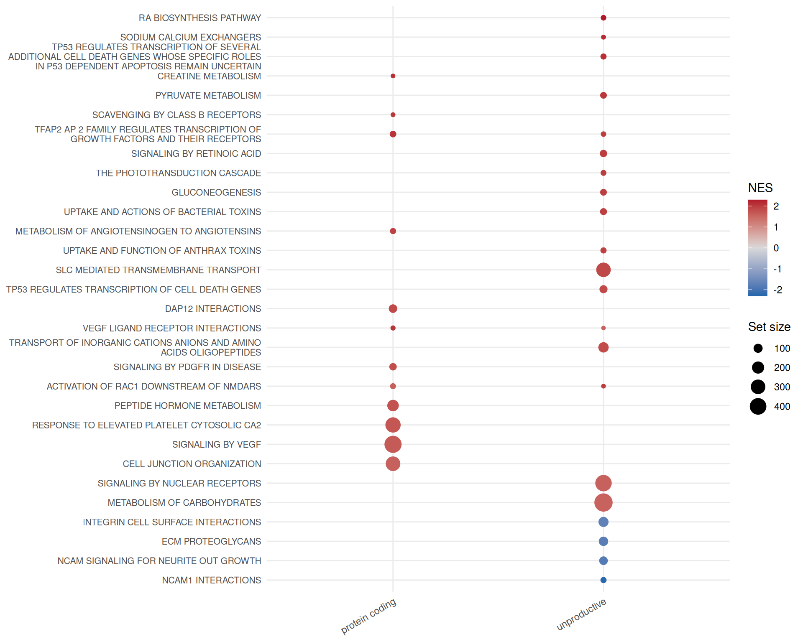
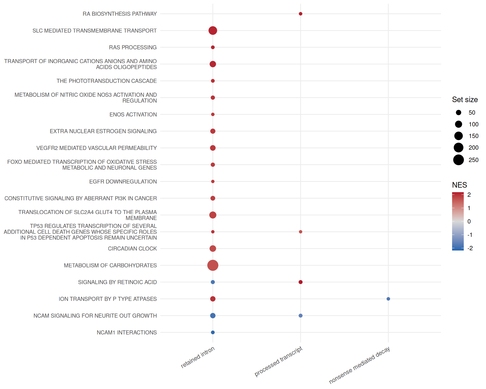

library(isoformic)
library(dplyr)
extdata <- fs::path_package("isoformic", "extdata")
annot_dir <- prepare_isoformic_annotation(download_reference(version = "33", file_type = "gff"))
iso <- IsoformicExperiment(
experiment_name = "preeclampsia_placenta",
annot_path = annot_dir,
assays = list(abundance = read_parquet(fs::path(extdata, "pe_abundance.parquet"))),
col_data = read_parquet(fs::path(extdata, "pe_col_data.parquet"))
)
de_tx(iso) <- read_parquet(fs::path(extdata, "pe_det.parquet"))
de_gene(iso) <- read_parquet(fs::path(extdata, "pe_deg.parquet"))Functional enrichment by transcript type
October 17, 2026
Source:vignettes/articles/isoformic-enrichment.qmd
A transcript-level table has many more significant features than a gene-level one, and most functional annotations are defined on genes. This article runs gene set enrichment on the transcript-level results, separately for protein coding transcripts and for the unproductive transcript types, so that a pathway enriched only in unproductive isoforms stands out.
It starts from the object built in the introduction:
Gene sets
read_gmt() reads a GMT file into a named list of gene symbols; the package bundles a subset of the Reactome collection of MSigDB.
genesets <- read_gmt(fs::path(extdata, "c2.cp.reactome.v2023.1.Hs.symbols.gmt.txt"))
length(genesets)
#> [1] 1654
head(names(genesets))
#> [1] "REACTOME_INTERLEUKIN_6_SIGNALING"
#> [2] "REACTOME_APOPTOSIS"
#> [3] "REACTOME_HEMOSTASIS"
#> [4] "REACTOME_INTRINSIC_PATHWAY_FOR_APOPTOSIS"
#> [5] "REACTOME_MAPK3_ERK1_ACTIVATION"
#> [6] "REACTOME_TRANSLESION_SYNTHESIS_BY_Y_FAMILY_DNA_POLYMERASES_BYPASSES_LESIONS_ON_DNA_TEMPLATE"Enrichment per transcript category
run_enrichment() expands gene sets to all transcripts of their genes and runs gene set enrichment analysis (fgsea) separately for protein coding transcripts and for the unproductive categories (retained intron, nonsense-mediated decay and transcripts without a defined coding sequence), both combined and individually. The result can be stored in the object so that it is saved with it.
set.seed(42)
enrichment <- run_enrichment(iso, genesets, pval_cutoff = 0.05)
iso@gsea$reactome <- enrichment
table(enrichment$experiment)
#>
#> nonsense_mediated_decay processed_transcript protein_coding
#> 50 57 219
#> retained_intron unproductive
#> 195 227
head(enrichment)
#> # A tibble: 6 × 9
#> pathway pval padj log2err ES NES size leadingEdge experiment
#> <chr> <dbl> <dbl> <dbl> <dbl> <dbl> <int> <list> <chr>
#> 1 REACTOME_ABC_… 2.27e-3 0.0572 0.432 0.377 1.45 266 <chr [47]> protein_c…
#> 2 REACTOME_ABC_… 1.94e-2 0.175 0.352 0.367 1.37 199 <chr [34]> protein_c…
#> 3 REACTOME_ACTI… 3.88e-2 0.268 0.288 0.613 1.52 16 <chr [5]> protein_c…
#> 4 REACTOME_ACTI… 5.54e-4 0.0295 0.477 0.729 1.85 19 <chr [10]> protein_c…
#> 5 REACTOME_ACTI… 6.91e-3 0.101 0.407 0.602 1.61 26 <chr [5]> protein_c…
#> 6 REACTOME_ACTI… 1.00e-2 0.118 0.381 0.569 1.62 34 <chr [14]> protein_c…plot_enrichment() draws the pathways side by side for each transcript category.
plot_enrichment(enrichment, n = 30, experiments = c("protein_coding", "unproductive"), nes_cutoff = 1.5)
plot_enrichment(enrichment, n = 20, experiments = c("retained_intron", "nonsense_mediated_decay", "processed_transcript"), nes_cutoff = 1.5)
Enrichment on the productive fraction
Ranking genes by the change in their productive fraction rather than by fold-change targets regulated unproductive splicing; run_productivity_enrichment() is described in the productivity article.
Session information
sessionInfo()
#> R version 4.6.2 (2026-10-29)
#> Platform: x86_64-pc-linux-gnu
#> Running under: Ubuntu 24.04.5 LTS
#>
#> Matrix products: default
#> BLAS: /usr/lib/x86_64-linux-gnu/openblas-pthread/libblas.so.3
#> LAPACK: /usr/lib/x86_64-linux-gnu/openblas-pthread/libopenblasp-r0.3.26.so; LAPACK version 3.12.0
#>
#> locale:
#> [1] LC_CTYPE=C.UTF-8 LC_NUMERIC=C LC_TIME=C.UTF-8
#> [4] LC_COLLATE=C.UTF-8 LC_MONETARY=C.UTF-8 LC_MESSAGES=C.UTF-8
#> [7] LC_PAPER=C.UTF-8 LC_NAME=C LC_ADDRESS=C
#> [10] LC_TELEPHONE=C LC_MEASUREMENT=C.UTF-8 LC_IDENTIFICATION=C
#>
#> time zone: UTC
#> tzcode source: system (glibc)
#>
#> attached base packages:
#> [1] stats graphics grDevices utils datasets methods base
#>
#> other attached packages:
#> [1] dplyr_1.2.1 isoformic_0.1.2.9022
#>
#> loaded via a namespace (and not attached):
#> [1] Matrix_1.7-6 gtable_0.3.6 jsonlite_2.0.0
#> [4] compiler_4.6.2 tidyselect_1.2.1 Rcpp_1.1.2
#> [7] parallel_4.6.2 scales_1.4.0 BiocParallel_1.46.0
#> [10] yaml_2.3.12 fastmap_1.2.0 lattice_0.23-1
#> [13] ggplot2_4.0.3 R6_2.6.1 labeling_0.4.3
#> [16] generics_0.1.4 curl_8.1.0 knitr_1.52
#> [19] tibble_3.3.1 DBI_1.3.0 RColorBrewer_1.1-3
#> [22] pillar_1.11.1 rlang_1.3.0 utf8_1.2.6
#> [25] fastmatch_1.1-8 xfun_0.62 fs_2.1.0
#> [28] S7_0.2.2 otel_0.2.0 cli_3.6.6
#> [31] withr_3.0.3 magrittr_2.0.5 digest_0.6.39
#> [34] grid_4.6.2 fgsea_1.38.0 cowplot_1.2.0
#> [37] lifecycle_1.0.5 vctrs_0.7.3 data.table_1.18.6.1
#> [40] evaluate_1.0.5 glue_1.8.1 farver_2.1.2
#> [43] duckdb_2.0.0 codetools_0.2-20 rmarkdown_2.32
#> [46] tools_4.6.2 pkgconfig_2.0.3 htmltools_0.5.9